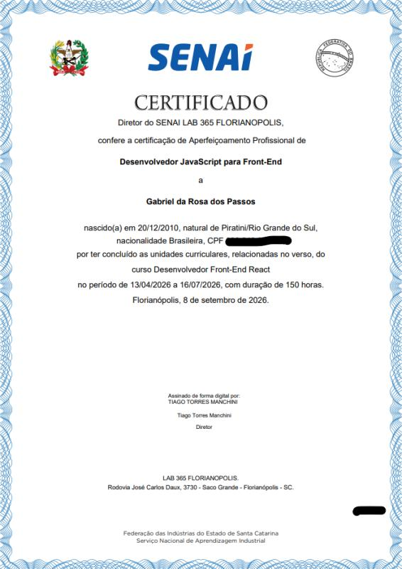
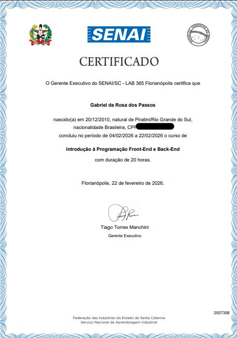
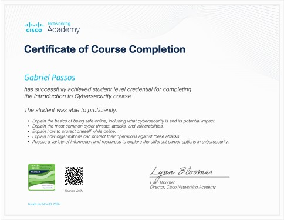
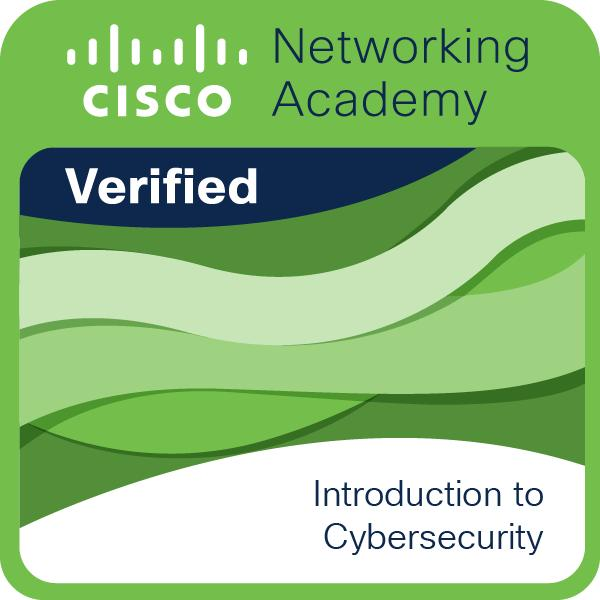

Opa, me chamo Gabriel!! E sou
Estudante de Programação
Fazendo e aprendendo o que gosto para ajudar as pessoas
Sobre Mim
Sou estudante do Ensino Médio em Tempo Integral, com formação
voltada à Tecnologia da Informação e interesse em desenvolvimento de
software, especialmente desenvolvimento web.
Tenho estudado HTML, CSS e JavaScript, aplicando
esses conhecimentos na criação de interfaces e funcionalidades para
aplicações web.
Também estou desenvolvendo meus conhecimentos em React e
Tailwind CSS , além de explorar outras áreas da tecnologia,
como inteligência artificial e cibersegurança.
Atualmente, desenvolvo projetos pessoais e acadêmicos que me permitem
colocar em prática os conhecimentos adquiridos, experimentar novas
tecnologias e compreender melhor as etapas do desenvolvimento de
software.
Entre eles estão o Tchê Musics, o Cesta Fácil e outros ainda em
desenvolvimento. Também participo da
Trilha Carreira Tech, do SCTEC/SENAI-SC, na qual amplio meus
conhecimentos técnicos e minha compreensão sobre o mercado de
tecnologia.
Busco construir a minha vida/carreira pessoal e profissional com os
conhecimentos e práticas que vou adquirindo ao longo do caminho,
aprimorando minhas hard-skills e soft-skills.
HABILIDADES
| HABILIDADE | DESCRIÇÃO |
|---|---|
| HTML | Sei boa parte das tags, formulários e tabelas e consigo estruturar boas páginas web com código limpo e boa hierarquia. |
| CSS | Consigo estilizar de forma moderna e adicionar responsividade a tudo feito no HTML. Utilizando Box Model, Flexbox, CSS Grid, seletores desde básico até avançados, Media Queries e classes limpas. |
| JavaScript | Sei desde o básico (operadores, laços de repetição, estruturas de controle, manipulação e métodos de arrays, funções e tipos de dados) até a parte assíncrona (Promises e async/await para chamadas de API) e o DOM (document.querySelector(), getElementById(), alteração de classes, estilos e textos, addEventListener e localStorage). |
| REACT | Tenho conhecimento sobre Props, componentização, hooks, consumo de API, rotas privadas e dinâmicas, formulários e estados. |
| Tailwind | Busco estudar mais sobre esta tecnologia, mesmo tendo feito este portfólio com ela, ainda estou insatisfeito com o que fiz e por isso quero evoluir meus conhecimentos nesta tecnologia. |
| Inglês | Nível A1, sei escrever frases simples (às vezes pecando na concordância), ler de forma simples, escutar e falar de forma básica. É outra área em que estou totalmente disposto a evoluir, pois saber inglês abre várias portas. |
Tchê Musics
Uma áudio-biblioteca de músicas gaúchas, onde você pode ouvir cada uma, ver sua letra, entender seu significado, favoritar, pesquisar por músicas e ver as biografias dos maiores autores deste gênero.
- Tecnologias utilizadas: HTML5, CSS3, JavaScript e localStorage
- Visualizar projeto: https://tche-musics.vercel.app/
- Repositório: https://github.com/PasteldeSazon/Tche-Musics
Cesta Facil
Uma aplicação que simula uma e-commerce real (onde não existe pagamento de verdade), você pode ver o catálogo de produtos, o carrinho, estoque ao vivo, pesuqisar por produtos, passar por uma simulação de pagamento e ver os detalhes de cada produto.
- Tecnologias utilizadas: React e suas bibliotecas (react-router-dom e react-hook-form), Tailwind, Json-Server, JavaScript e Context API.
- Visualizar projeto: https://projeto-final-tan.vercel.app/
- Repositório: https://github.com/PasteldeSazon/PROJETO-FINAL
SkillMatch
É um site que calcula a melhor vaga pra ti conforme tuas habilidades e experiencias preenchidas em um formulário, retornando ao final do formulário as três melhores vagas com destaque na primeira.
- Ferramentas utilizadas: HTML, CSS e JavaScript
- Visulaizar projeto: https://skillmatch-lake-alpha.vercel.app/
- Repositório: https://github.com/PasteldeSazon/Skill-Match-
Formações acadêmicas
SENAI/SC - Serviço Nacional de Aprendizagem Industrial
Status: em andamento
Participei na Trilha Carreira Tech do SENAI no ramo de desenvolvimento de software. Foram 518 horas de conteúdo ao total, sendo 300 de programação, 48 de mentoria de carreira, 48 de inglês, e o resto são cursos transversais ou extras do conteúdo. Durante a formação, participo de atividades práticas, projetos colaborativos e atividades voltadas ao desenvolvimento de habilidades profissionais.
| Data de Inicio | Data de término (prevista) |
|---|---|
| Mês: Fevereiro | Mês: Janeiro/Fevereiro |
| Ano: 2026 | Ano: 2027 |
- HTML 5
- CSS 3
- Tailwind CSS
- JavaScript
- React.js
- Git e Git Hub
- Mentoria de Carreira
- Inglê básico
Competências
MÍDIA

Certificado do Primeiro Módulo da trilha
Escola de Educação Básica Heleodoro Borges
Status: em andamento
Atualmente curso o Ensino Médio em Tempo Integral, com formação complementar em Tecnologia da Informação. Durante minha formação, estudo fundamentos de programação e desenvolvimento web, aplicando os conhecimentos adquiridos em atividades e projetos acadêmicos. Durante os 3 anos de curso é apresentado um pouco de quase todas as área da tecnologia, para cada estudante conhecer e se sentir intressado.
Neste momento estou no 1º ano, mas no proximo ano vamos ter como aprendizado princiapl banco de dados e no 3º haverá um foco maior em arquitetura de computadores onde vamos aprender a configurar máquinas e pequenos robos com linguagens de baixo nível e Arduíno.
| Data de Inicio | Data de término (prevista) |
|---|---|
| Mês: Fevereiro | Mês: Dezembro |
| Ano: 2026 | Ano: 2028 |
- Arquitetura de computadores
- Programação para web (HTML 5 e CSS 3)
- Algoritmo e lógica de programação (utilizando Python)
Competências
MÍDIA
Ainda não tenho um certificado de conclusão, mas a hora que tiver será mostrado aqui.
Licenças e certificados
Introdução à Programação Front-End e Back-End
Organização emissora: SENAI/SC – LAB 365 Florianópolis
Data de emissão: 04/02/26
Código da credencial: 2507358
MÍDIA

Meu certificado de Conclusão
Conclusão do curso
Introdução à Programação Front-End e Back-End, oferecido pelo
SENAI/SC – LAB 365 Florianópolis, com carga horária de 20 horas.
A formação foi realizada entre 04/02/2026 e 22/02/2026.
Introduction to Cybersecurity
Organização emissora: Cisco Networking Academy
Código da credencial: a91df196-944e-464e-85d8-6607f7598f3d
URL da credencial: https://www.credly.com/badges/a91df196-944e-464e-85d8-6607f7598f3d
- cibersegurança
Competências
MÍDIA

Certificado de conclusão do curso
Conclusão do curso Introduction to Cybersecurity (6 horas), com foco
nos fundamentos da segurança cibernética.
A formação abordou os principais conceitos de segurança online,
ameaças, ataques e vulnerabilidades digitais, práticas de proteção
individual e estratégias utilizadas por organizações para proteger
suas operações, além de apresentar diferentes possibilidades de
carreira na área de cibersegurança.

Minha credencial de conclusão do curso
Gostou do meu trabalho???
Se achas minha apresentação boa o suficiente, então estou apto a trabalhar na sua empresa (caso seja um recrutador)
Se você prefere um contato direto, pode me chamar por qualuqer um dos contatos a seguir:
- E-mail: passosgabriel2022@gmail.com
- WhatsApp: Chamar no WhatsApp
- LinkedIn: Ver LinkedIn
Ou envie uma mensagem rápida por aqui